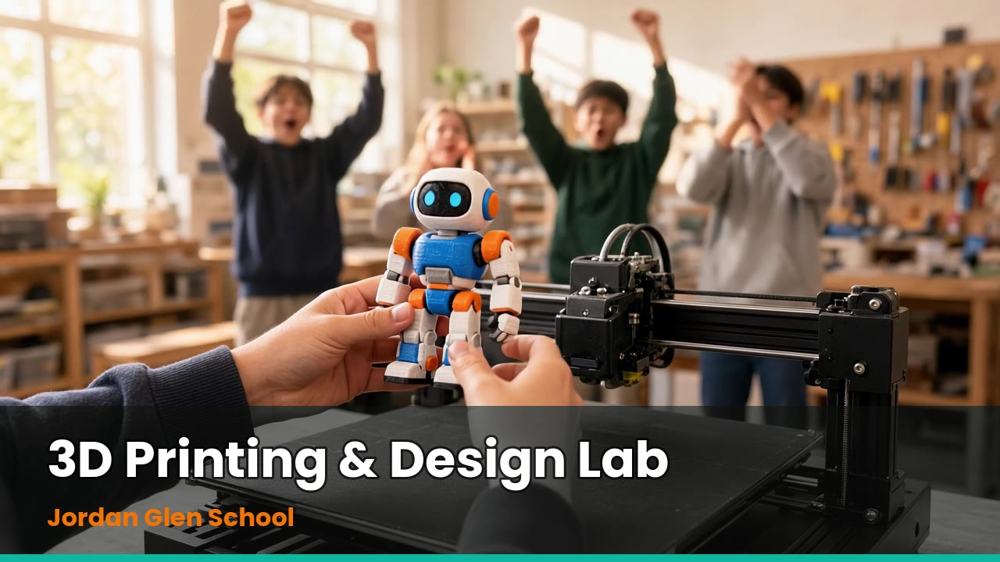

Know the machine
- What is 3D printing?
- How a printer works
- Safety and the maker space
- Materials
Vector Design Group
A hands-on 3D printing and design course for grades 5 to 8, taught by Daniel Solano of Vector Design Group, with a 9-week or 18-week option, a classroom set of nine printers, and a funding plan that starts with grants.

Video: https://vectordesigngroup.github.io/jordan-glen-3d-printing/assets/videos/promo.mp4
Prepared for Jeff Davis, Director, Jordan Glen School. From Daniel Solano, Vector Design Group. October 30, 2026.
About Vector Design Group: Vector Design Group is a design and fabrication studio run by Daniel Solano. We work in 3D printing, 3D modeling, laser engraving and product development, and this course teaches students the same loop we use: idea, design, make, test, improve.
| Reason | What it means for Jordan Glen students |
|---|---|
| Real skills, early | Students learn to design in free browser tools (Tinkercad and Onshape), slice a model, run a printer safely, and fix a failed print by changing one thing at a time. These are the same steps a working designer follows. |
| It strengthens your VEX Robotics program | The course has a VEX module on designing practice parts to the VEX hole grid, with the same gear-ratio math students use on their robots. Parts are labeled as practice parts: the 2026-27 VEX manuals restrict 3D-printed parts on competition robots, so students learn to read the rules before they build. |
| Entrepreneurship, not just making | Module 10 takes an idea to a product pitch and a one-page business plan, and compares two paths: manufacture and sell, or license the design. Students finish with a pitch they can say in 60 seconds. |
| Something to take home | Every student prints, assembles and tests a take-home project: the Desk Buddy Bot (grades 5-6) or the Crank-Gear Catapult (grades 7-8). |
| A small-school fit | With about 87 students and a school day that already has room for electives, one shared set of nine printers can serve every 5th to 8th grader. |
Public and ready to review today
The full course is already built and live. Nothing below is a plan to build later. You are welcome to click through it before deciding.
| Track | Grades | Take-home project | Tools |
|---|---|---|---|
| Track A | 5 and 6 | Desk Buddy Bot: a desk-sized robot character, printed in parts and assembled | Free browser CAD (Tinkercad), slicer, nine printers |
| Track B | 7 and 8 | Crank-Gear Catapult: a working crank-and-gear mechanism with a printed arm and base, tested for range | Free browser CAD (Tinkercad, Onshape), slicer, nine printers |
Assessment is by the 1-to-4 rubric, the portfolio, and the take-home project. Students can earn a printable certificate and a Printer Operator badge checklist; a teacher still approves every print job.
Pacing is from the teacher kit; the exact class times are the school's call
| 9-week term | 18-week term | |
|---|---|---|
| Pace | Eleven modules; two weeks carry a pair of topics | Each module gets two weeks; the second week is the lab week |
| Best for | A focused first pilot, one marking period or elective block | A full semester, deeper practice, more print days and a showcase night |
| Take-home project | Printed and tested in week 9 | Print queue days, then test, improve and showcase rehearsal in weeks 17-18 |
| Contact time proposed | 2 sessions a week of 60 minutes, 18 hours | Same 2 sessions a week, 36 hours |
| Instructor fee (see below) | $2,400 | $4,400 |
| Week (9-week term) | Focus |
|---|---|
| 1 | What is 3D printing |
| 2 | How a printer works |
| 3 | Safety and the maker space |
| 4 | Materials |
| 5 | Designing in free CAD |
| 6 | Model libraries and slicing |
| 7 | Troubleshooting and VEX |
| 8 | From idea to business |
| 9 | Capstone and take-home project |
The teacher kit's calendars run Monday to Friday. If your teachers want to run the course themselves on days I am not in the room, they can follow it as written.
Prices checked October 30, 2026. Budget details available on request.
One set of nine printers is enough for about 50 students: that works out to roughly 72 printer-hours for 50 take-home kits, or about 8 hours across nine printers. I recommend the Bambu Lab A1 mini at $199 each. It is a compact 180 mm machine that levels itself, runs quietly (about 49 dB), and ships free in the lower 48 with 30-day returns.
Equipment budget: line items, printer comparison, instructor pricing, grants and how to apply. Budget details available on request. October 30, 2026.
Proposed starting points, open to discussion
| Option | How it works | Price |
|---|---|---|
| A. School contract, 9 weeks | All grade 5-8 students take the course in school time; about 31.5 paid hours including prep and printer tending | $2,400 |
| B. School contract, 18 weeks | Same schedule for a full semester; about 63 paid hours | $4,400 |
| C. Parent-paid club | An after-school club with 12 students a section; per student per 9-week session (18-week version $520) | $275 per student |
| D. Lab fee | Added to any option for filament, spare parts and the take-home project | $25 per student |
| E. Curriculum license | The course, videos, teacher kit and print queue, for your teachers to run on their own; no instructor needed | $2,500 one time, or $1,000 a year |
| F. Printer lease | Only if the school prefers not to buy printers up front; buying is cheaper in under 7 months | About $30 per printer per month |
These are proposals. They are not quotes the school has accepted, and every number can change when we talk.
Grants are being explored. None of them is secured and no application has been sent
Jordan Glen School is a 501(c)(3), which opens several doors. I researched grant programs that accept private schools and organized them by fit. The five I would pursue first are below. Official pages were opened on October 30, 2026; dates are as the funders state them. With your approval, I will prepare the applications and the school's office would submit them. Nothing has been sent to any funder.
| Funder | Amount | Next date | Notes |
|---|---|---|---|
| Toshiba America Foundation, grades 6-12 | Up to $5,000 | Dec 1, 2026, then Mar 1, 2027 | Teacher-led school-day projects; one of your 5th to 8th grade teachers would be the named applicant. Call first to confirm printers qualify |
| Walmart Spark Good Local Grants | $250 to $5,000 | Closes Dec 31, 2026 | Private nonprofit K-12 schools are named as eligible; request goes to a nearby Walmart or Sam's Club |
| Rotary Clubs of Gainesville Foundation | Not stated | Next window not posted | One-time equipment for Alachua County nonprofits; the 2026 window closed Sept 16 |
| Publix Super Markets Charities | Not stated | Requests accepted year-round | Private-school eligibility is not stated, so it needs a quick check |
| Clay Electric Foundation | Up to $20,000 | Deadline not stated | Schools cannot apply directly; a partner 501(c)(3) would apply for a project in the school |
How the school's cost could look. The first two bars use the numbers from the budget page: the recommended equipment kit plus the 18-week contract, before and after a $25 lab fee from 50 families. The last two assume the equipment is fully covered by a grant, which is not promised. Budget details available on request.
If you choose the 9-week contract instead, subtract $2,000 from the first and third bars.
Target dates depend on your decision and the school calendar, which I do not have
Look through the course site and this page, and tell me which option you prefer, or what you would change. A short meeting at the school works well.
The school office gathers its IRS letter and financial documents. I write the narratives. Toshiba's next deadline is Dec 1, 2026 and Walmart closes Dec 31, 2026.
Apply to Publix, ask Rotary and Clay Electric about their windows, and agree on the written terms for the instructor fee.
Toshiba's decision is due by Jan 15, 2027 and funds by Feb 15. Walmart notifies after its cycle closes; the exact date is not stated.
Order printers once funding is settled, then set up, run test prints, review the safety plan and walk the room with your staff.
Start the 9-week pilot, or hold the 18-week version for the fall, depending on the school calendar. If the school funds the equipment itself, we can start sooner.
| Decision | Options |
|---|---|
| 1. Term length |
|
| 2. Instructor option |
|
| 3. Equipment |
|
| 4. Grant applications |
|
| 5. Lab fee of $25 per student |
|
Thank you for considering this. I would love to show the course and a printer in person.
Equipment budget, instructor pricing, grants and how to apply. Budget details available on request. October 30, 2026.